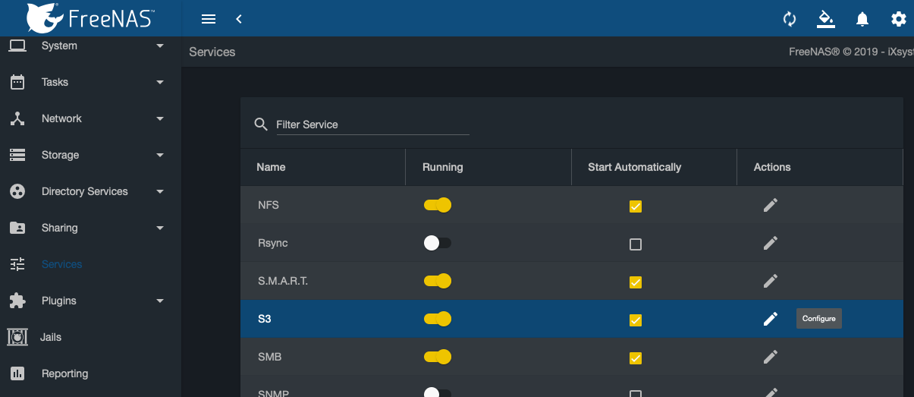

UPDATED: 02/11/2020
Terraform is a great tool for provisiong infrastrucutre, deploying apps, and just about everything in between. It’s a Swiss Army Knife for DevOps; or at least mine. But to take Terraform to the next level, you need to use a remote backend. This is easy if you’re using a Cloud provider but what if you don’t want your sensitive deployment data in the cloud and/or, like me, are too cheap to shell out the money for S3, Blob, GCS, etc?
Fortunately, I’m running FreeNAS and it just so happens to come with its own S3 (MinIO) service built in! In this guide, I will show you how to set this FreeNAS service to serve as your backend for Terraform.
Step 1
First we’re going to need a new Dataset for this. In FreeNAS, navigate to Storage -> Pools -> <your_pool> -> Add Dataset and create a new Dataset called S3
Step 2
You’ll need an SSL Cert for the S3 Service and ideally a DNS entry from your router/firewall (ie. pfSense). I’m going to assume you already have this setup since setting FreeNAS to use HTTPS only should of been one of the first things you did when deploying it. You’ll need a Certificate in System -> Certificates to use for the next step.
Step 3
Navigate to Services and locate the S3 service and click configure. 
- Select the IP Address you wish to bind to
- You can leave the Port set to
9000 - Access Key should be characters
[a-z0-9]{5,20} - Secret Key should be
[a-z]{8,40} - Save these credentials in a safe place as you’ll need them later.
- For the Disk, navigate to the Dataset you created in Step 1
- Enable the Browser so you’re able to create and view your buckets later
- Chose the Certificate mentioned in Step 2
- Click Save
NOTE: There is a bug in v11.3-RELEASE that breaks HTTPS. Follow the bug link for workaround.
Step 4
Navigate to https://freenas.your-domain.lan:9000/ and login to MinIO using the credentials from Step 3
In the bottom right corner, click the red plus-sign and create a new Bucket named terraform.
Step 5
Next let’s drop those credentials in a secure file location that our Terraform projects can reference. I put mine in ~/.s3/backend.conf. It should have the following:
bucket = "terraform"
region = "us-east-1"
endpoint = "https://freenas.your-domain.lan:9000"
access_key = "<your_access_key>"
secret_key = "<your_secret_key>"
force_path_style = true
skip_credentials_validation = true
Step 6
Now we’re ready to configure Terraform. In your Terraform project, create a new file called backend.tf with the following code:
terraform {
backend "s3" {
key = "some/path/appname.tfstate"
}
}
The key can be whatever you want really. I tend to namespace mine based on the project. For example, if I had a project that deployed Bitwarden to Kubernetes my key would be k8s/bitwarden.tfstate.
Step 7
Finally, we can intitialize our project using the new remote backend:
terraform init -backend-config=/path/to/.s3/backend.conf
That’s it, you should be all set to deploy resources and have Terraform save its state to this new S3 backend.